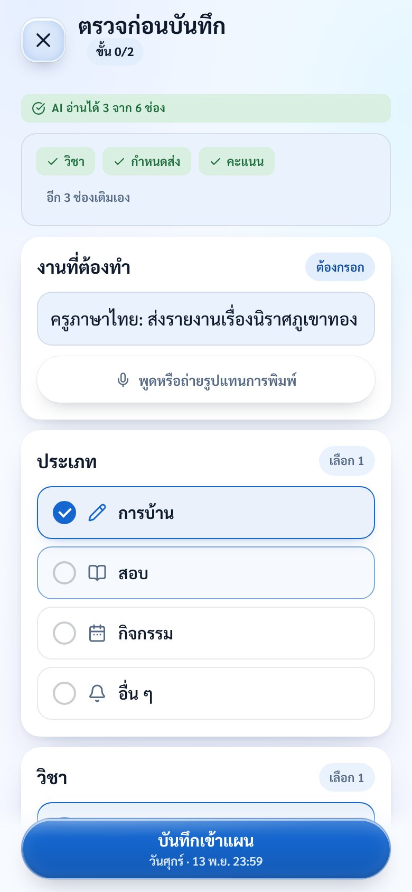
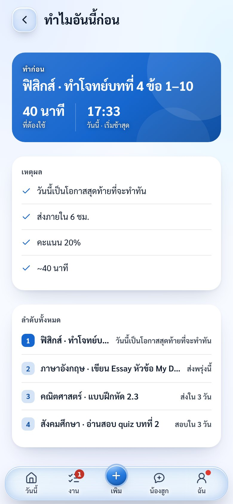
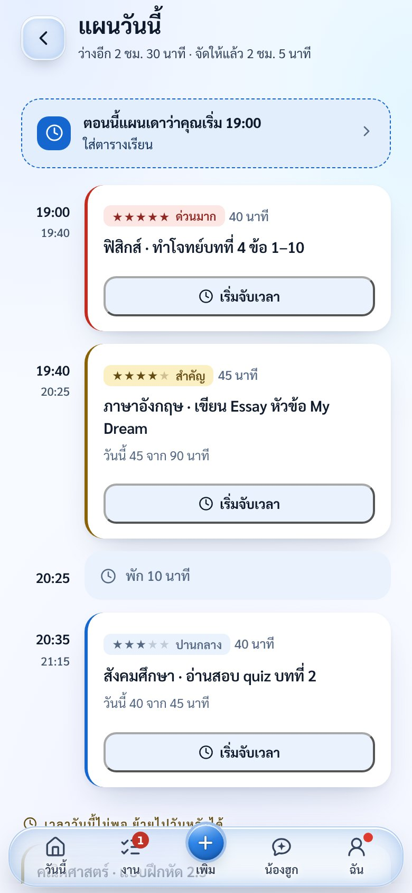
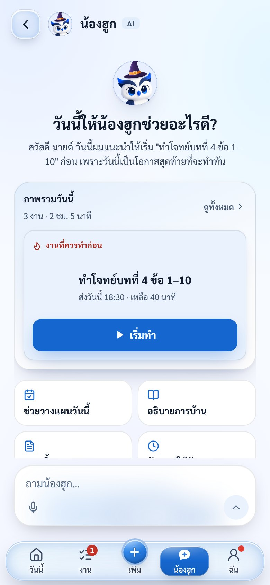
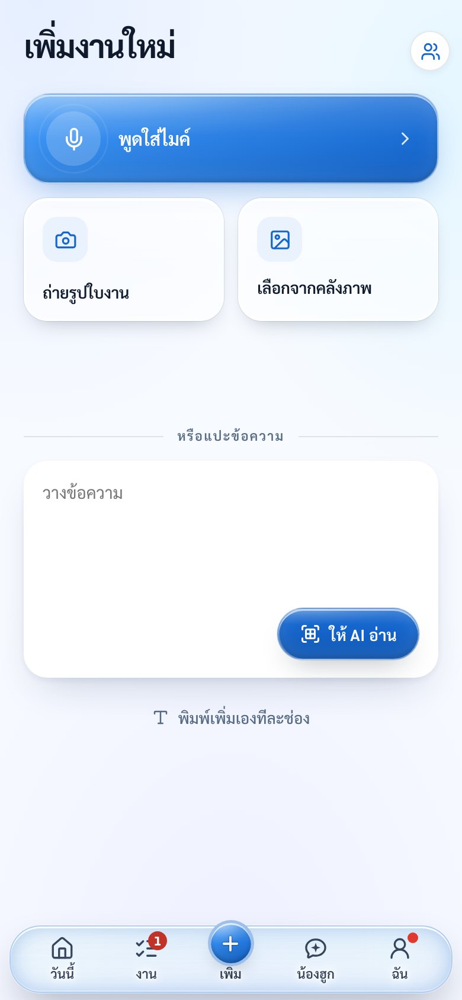
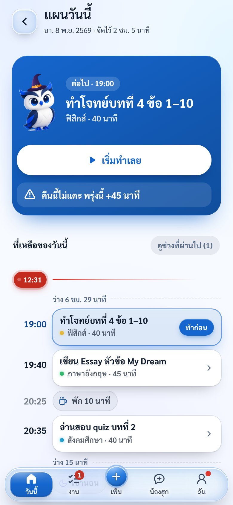
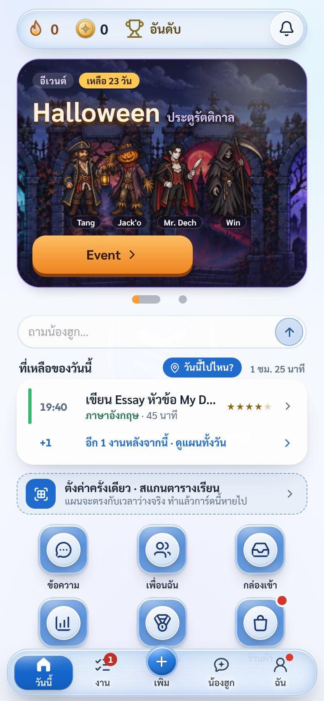

ผู้ช่วยตัดสินใจด้วยปัญญาประดิษฐ์สำหรับนักเรียนมัธยมศึกษา
เพื่อตอบคำถาม “ตอนนี้ควรทำงานอะไรก่อน”
| ผู้จัดทำ | ทีม MasterpieceX |
| การแข่งขัน | SPU AI Hackathon 2026 |
| ต้นแบบที่ใช้งานได้ | https://nadokagenou.github.io/studentos-ai/ (รุ่น 1C62) |
| วันที่จัดทำ | พฤศจิกายน 2569 |
| 1 | แนวคิดและรูปแบบธุรกิจ (Business Concept) | 2 |
| 2 | แผนการประยุกต์ใช้ปัญญาประดิษฐ์ (AI Implementation Plan) | 4 |
| 3 | แนวทางการพัฒนาต้นแบบ (MVP Development Plan) | 5 |
| 4 | แผนการทดสอบตลาด (Market Validation Plan) | 6 |
| 5 | โครงสร้างราคาและประมาณการรายได้ (Pricing & Revenue Estimation) | 7–9 |
| บทสรุปและแหล่งอ้างอิง | 10 |
สแกนเพื่อทดลองใช้ต้นแบบบนมือถือ (ไม่ต้องติดตั้งหรือสมัครสมาชิก) · ภาพหน้าจอทั้งหมดในรายงานถ่ายจากต้นแบบนี้โดยใช้ข้อมูลตัวอย่าง
To-do list ทั่วไปแสดงงานทั้งหมดแล้วโยนการตัดสินใจกลับให้ผู้ใช้ StudentOS ทำตรงข้าม: ตัดสินใจให้ แล้วอธิบายว่าทำไม
ที่มา: แบบสำรวจนักเรียนของทีม 18 ก.ค. 2569 (n = 13 · ส่วนใหญ่ ม.4) — ใช้เป็นสัญญาณตั้งต้นเพื่อกำหนดปัญหา ไม่ใช่ตัวแทนตลาดทั้งประเทศ จึงมีแผนทดสอบกับผู้ใช้จริงในหัวข้อ 4
| กลุ่ม | บทบาท |
|---|---|
| นักเรียน ม.1–ม.6 ใช้มือถือเป็นหลัก รับงานหลายช่องทาง กำหนดส่งทับกัน | ผู้ใช้และผู้จ่าย · เติมโทเคนครั้งละน้อย |
| ผู้ลงโฆษณา | จ่ายต่อการดูโฆษณาแลกรางวัล (ผ่านเครือข่ายโฆษณา) |
| ครู (ระยะถัดไป) | ช่องทางกระจายแอป ไม่ใช่ผู้จ่าย |
| องค์ประกอบ | รายละเอียด |
|---|---|
| รายได้ | Free-to-use + โทเคนในแอป + โฆษณาแบบเลือกดูเอง — ส่วนที่ช่วยให้งานเสร็จใช้ฟรี · รายได้หลักจากเติมโทเคน 29–99 ฿ (ของตกแต่ง เครดิต AI Pass 30 วัน 39 ฿) · รายได้เสริมจากโฆษณาวิดีโอที่ผู้ใช้กดดูเพื่อรับโทเคน |
| ช่องทาง | เว็บแอป PWA (แชร์ลิงก์/QR ได้ทันที) · LINE ซึ่งเป็นช่องทางที่นักเรียนรับงานอยู่แล้ว · ชวนเพื่อนด้วยรหัสเชิญ · กลุ่มนักเรียนและครูที่ปรึกษา |
| ต้นทุนหลัก | ค่าเรียกใช้โมเดล AI (อ่านรูป/แชต) · ฐานข้อมูลและซิงก์ (Supabase) · ค่าธรรมเนียมรับชำระ · เวลาทีมพัฒนาและดูแลผู้ใช้ |
| ความได้เปรียบ | เอนจินเลือกงานที่อธิบายเหตุผลได้ + ตัวอ่านข้อความงานภาษาไทย + บริบทชีวิตนักเรียนไทย (ตารางเรียน เวลาเดินทาง LINE) ซึ่งเครื่องมือสากลยังไม่ได้ออกแบบมาเพื่อสิ่งนี้ |
ทุกภาพในหน้านี้ถ่ายจากต้นแบบที่ nadokagenou.github.io/studentos-ai โดยใช้ข้อมูลงานตัวอย่าง




| ทางเลือก | จุดแข็ง | ช่องว่างที่ StudentOS เข้าไปแก้ |
|---|---|---|
| LINE / Notes / สมุด | ใช้อยู่แล้ว ไม่ต้องเปลี่ยนนิสัย | จดได้แต่ไม่จัดลำดับ ไม่เตือน ข้อความจมในแชตกลุ่ม — StudentOS รับงานจาก LINE และข้อความที่แปะมาได้โดยตรง |
| MyStudyLife | มีตารางเรียนและผู้ช่วย AI (Scout) | ไม่ได้ออกแบบมาเพื่อข้อความงานภาษาไทย — StudentOS อ่านข้อความงานภาษาไทยและคิดจากบริบทโรงเรียนไทย |
| Todoist / Notion | ยืดหยุ่น มีแผนฟรี | ผู้ใช้ต้องจัดระบบและตัดสินใจเอง — StudentOS ตั้งค่าน้อยและเลือกงานแรกให้ทันที |
| Google Classroom | ครูลงงานเป็นระบบ | ใช้ในโรงเรียนไทยไม่ทั่วถึง (1/13 ในแบบสำรวจ) และไม่ช่วยตัดสินใจว่าทำอะไรก่อน |
A · ผู้ช่วยส่วนตัว (ตอนนี้) → B · เพื่อนช่วยติดตาม นัดโฟกัสกับเพื่อน เมื่อพบว่าคนเริ่มได้แต่ไม่กลับมาใช้ → C · ห้องเรียน ครูลงงานครั้งเดียวทั้งห้อง เมื่อพบว่างานหายตั้งแต่ต้นทาง
ทุกฟีเจอร์ต้องตอบได้ว่า “ช่วยลดการตัดสินใจของนักเรียน หรือเพิ่ม?” ถ้าเพิ่ม จะไม่อยู่บนหน้าแรก — หน้าแรกต้องเห็นครบโดยไม่ต้องเลื่อน
ข้อมูลคู่แข่งจากเว็บไซต์ทางการ: mystudylife.com/tour · todoist.com/pricing · notion.com/help/notion-for-education (ตรวจ 6 พ.ย. 2569) — ข้อได้เปรียบด้านภาษาไทยเป็นสมมติฐานที่จะพิสูจน์ในการทดสอบตลาด
ใช้ AI ในจุดที่มนุษย์เสียแรงมากที่สุด (อ่านและแปลงข้อมูล) ส่วนการเลือกงานใช้เอนจินที่ตรวจสอบได้และอธิบายเหตุผลได้ทุกครั้ง
| ส่วน | เทคนิคที่ใช้ | ทำงานที่ |
|---|---|---|
| อ่านข้อความงาน | parser ภาษาไทย (กฎ + พจนานุกรมวิชา) ทำงานในเครื่อง ไม่ต้องใช้เน็ต เข้าใจคำอย่าง “ศุกร์นี้” “เที่ยงคืน” (= 23:59 ของวันนั้น) | ในเครื่อง |
| อ่านรูปใบงาน | โมเดลภาพ (Google Gemini) ผ่าน Supabase Edge Function ocr-assist · ขอความยินยอมก่อนส่งรูป · ออฟไลน์/ไม่ยินยอม ใช้ Tesseract ในเครื่อง | เซิร์ฟเวอร์* สำรองในเครื่อง |
| อ่านตารางเรียน | ถ่ายรูปตารางเรียน → AI แปลงเป็นช่วงเรียน/ช่วงว่าง (read-timetable, read-day) | เซิร์ฟเวอร์* |
| เลือกงานแรก | Priority Engine (priorityInfo) ให้คะแนนจากความใกล้กำหนดส่ง สัดส่วนคะแนน งานสอบ และเวลาที่ต้องใช้ แล้ว studyPlan() วางลงช่องว่างจริง — ทุกจอใช้แผนก้อนเดียวกัน | ในเครื่อง |
| ผู้ช่วยแชต | LLM (ask-sai) ผ่าน Gemini หรือ gateway 9arm (สลับได้โดยไม่แก้โค้ด) ได้รับบริบทงาน ตาราง และแผนวันนี้ ตอบในขอบเขตการเรียน | เซิร์ฟเวอร์* |
| ลายมือไทย | เพิ่มชุดตัวอย่างลายมือ เลือกผู้ให้บริการที่อ่านได้ดีที่สุด | รอบถัดไป |

คำแนะนำ “ทำอะไรก่อน” ต้องเหมือนเดิมทุกครั้งที่ข้อมูลเหมือนเดิม ต้องไม่เกินเวลาว่าง และต้องอธิบายได้ เอนจินแบบกำหนดกฎจึงเป็นผู้ตัดสิน ส่วน LLM ทำหน้าที่อ่านข้อมูลเข้าและสื่อสารเหตุผลกับนักเรียน — ลดต้นทุนต่อการใช้ และลดความเสี่ยงที่ AI จะ “แต่ง” คำตอบ
ข้อมูลงานเก็บในเครื่องเป็นหลัก ใช้ได้โดยไม่ต้องสมัคร · ขอความยินยอมก่อนส่งรูปให้ AI ครั้งแรก · ไม่มีบริการวิเคราะห์ของบุคคลที่สาม · ปฏิเสธได้และยังใช้ทางสำรองในเครื่องได้ · แพ็กฟรีบางเจ้าอาจนำข้อมูลไปปรับปรุงโมเดล ต้องตรวจเงื่อนไขก่อนเปิดกว้าง
เรียก AI เฉพาะงานที่กฎในเครื่องทำไม่ได้ · ทดลองใช้ Gemini ฟรี · เมื่อผู้ใช้มากย้ายไป gateway 9arm (199 ฿/เดือน ไม่ต้องแก้โค้ด) หลังตรวจเพดานและการรับรูป · โควตารายบัญชี · วัด “ต้นทุนต่องานที่ผู้ใช้ยืนยันสำเร็จ”
MVP คือวงจร รับงาน → เลือกให้ → เริ่ม → เสร็จ → งานถัดไป ซึ่งต้นแบบบนเว็บทำได้ครบในเครื่อง ฟีเจอร์เสริมเก็บไว้เป็นทางเลือกโดยไม่บังวงจรหลัก
| ความสามารถ | สถานะ |
|---|---|
| เพิ่มงาน: พิมพ์ · แปะข้อความ · สแกนใบงาน · พูด · ตรวจก่อนบันทึก | มีในต้นแบบ |
| เลือกงานแรกพร้อมเหตุผล + แผนวันนี้จากเวลาว่างจริง | มีในต้นแบบ |
| โหมดโฟกัส จับเวลา ขั้นตอนย่อย → เสนองานถัดไปเมื่อเสร็จ | มีในต้นแบบ |
| ตารางเรียน กิจวัตร เวลาเดินทาง (กรอกเอง · อ่านจากรูปต้องใช้เซิร์ฟเวอร์*) | มีในต้นแบบ |
| ผู้ช่วย AI น้องฮูก · แจ้งเตือนจากเซิร์ฟเวอร์ · LINE | มีโค้ด · เซิร์ฟเวอร์* |
| ใช้ออฟไลน์ (PWA) · บัญชีและซิงก์ข้ามเครื่อง | ซิงก์ต้องใช้เซิร์ฟเวอร์* |
| เพื่อน ห้องเรียน ร้านค้าธีม อีเวนต์ | ฟีเจอร์เสริม |
Vanilla JavaScript + PWA (ไม่มี build step — แก้แล้วขึ้นเว็บได้ทันที) · GitHub Pages · Supabase (Auth, Postgres + Row Level Security, Edge Functions) · Google Gemini · Tesseract.js · Stripe (เตรียมไว้สำหรับรับชำระ)

| สัปดาห์ | งานที่ทำ | เกณฑ์ผ่าน |
|---|---|---|
| 1 | คืนบริการเซิร์ฟเวอร์ (ขยายโควตา/ลดปริมาณข้อมูลรับส่ง) · ตรวจบัญชี ซิงก์ ออฟไลน์ · สำรองข้อมูลก่อนทดสอบ | เพิ่ม/แก้/ปิดงาน แล้วข้อมูลถูกต้องหลังโหลดใหม่ ออกจากระบบ และสลับบัญชี |
| 2 | ย่อขั้นตอนเพิ่มงาน · ข้อความวันที่ไม่แน่ใจให้อ่านเข้าใจ · เตรียมตัววัดที่ไม่เก็บเนื้อหางาน | นักเรียน 5 คนใช้เองได้ เห็นงานแรกและบอกเหตุผลได้ |
| 3 | ทดลองใช้จริง 5 คน 7 วัน · จับเวลาการเพิ่มงานและการทำต่อ | มีฐานงานที่ครูสั่งจริง เทียบกับงานที่ถูกเพิ่มสำเร็จ |
| 4 | แก้คอขวดใหญ่ที่สุด 1–2 เรื่องจากผลจริง · ตรวจชุดทดสอบ AI และการแจ้งเตือนบนเครื่องจริง | ไม่มีข้อมูลหาย · งานหลักสำเร็จโดยไม่ต้องมีคนช่วยกด |
| 5 | ขยายเป็น 30 คน อย่างน้อย 2 ห้อง · เริ่มวัดการกลับมาใช้โดยไม่เตือนรายคน | รายงาน cohort และการเลิกใช้ แยกการใช้จริงจากการเปิดดูครั้งเดียว |
| 6 | สรุปต้นทุนต่อผู้ใช้ · ทดสอบหน้าราคา (ระบุว่ายังไม่เปิดขาย) · เลือกทิศทาง A / B / C | ตัดสินใจจากหลักฐาน · ไม่สรุปผลวันที่ 14 ก่อนครบ 14 วันจริง |
* เซิร์ฟเวอร์ (Supabase แผนฟรี) ถูกจำกัดการใช้งานเพราะเกินโควตาตั้งแต่ราว 30 ต.ค. 2569 ฟีเจอร์ที่ทำงานในเครื่องยังใช้ได้ตามปกติ ส่วนที่ต้องใช้เซิร์ฟเวอร์จะกลับมาเมื่อขยายแผน — เป็นงานของสัปดาห์ที่ 1 · ทีมมีชุดทดสอบอัตโนมัติที่รันด้วย Node สำหรับการซิงก์ สลับบัญชี service worker การชำระเงิน และสิทธิ์ฐานข้อมูล
คำตอบ “สนใจจะใช้” ในแบบสำรวจพยากรณ์การใช้จริงได้น้อย แผนนี้จึงวัดสิ่งที่นักเรียนทำจริง และตั้งเกณฑ์ไว้ก่อนเห็นผล
5 คน × 7 วัน · สังเกตและสัมภาษณ์ · แก้จุดที่ทำให้ใช้ไม่ได้
30 คน ≥2 ห้อง · ฐานเดิม 7 วัน + ใช้แอป 14 วัน · รวมราว 4 สัปดาห์
แสดงหน้าราคาจริง วัดการยืนยันสนใจ แล้วเปิดขายจริงในกลุ่มเล็ก
| คำถาม | ตัววัด | เกณฑ์ผ่าน |
|---|---|---|
| เริ่มใช้เองได้ไหม | คนที่เพิ่มงานแรกและเริ่มโฟกัสได้โดยไม่มีคนช่วย ÷ ผู้เข้าทดลองทั้งหมด | ≥ 80% |
| เก็บงานเข้าจริงไหม (capture rate) | งานที่ได้รับจริงและถูกเพิ่มในแอป ÷ งานที่ได้รับจริงในช่วงเดียวกัน (มัธยฐานรายคน) | ≥ 70% · ฐาน ≥3 งาน/คน |
| ทำตามคำแนะนำไหม | ครั้งที่กดเริ่มจากงานที่แอปแนะนำ ÷ ครั้งที่เห็นคำแนะนำ | ≥ 50% |
| กลับมาใช้ไหม | คนที่ใช้ฟังก์ชันหลัก ≥1 ครั้งในวันที่ 8–14 ÷ คนที่เริ่มใช้ใน cohort เดียวกัน | ≥ 40% (12 จาก 30) |
| ช่วยส่งงานทันไหม | งานที่ส่งทัน ÷ งานที่ถึงกำหนด — เทียบช่วงก่อนใช้กับช่วงใช้ของคนเดิม | มีแนวโน้มดีขึ้น |
| ยอมจ่ายไหม | คนที่กดเติมโทเคน/ซื้อ Pass ÷ คนที่เห็นร้านค้า · คนที่กดดูโฆษณาแลกรางวัล ÷ ผู้ใช้ | เติม ≥2% · ดูโฆษณา ≥25% |
| ถ้าพบว่า… | ทำต่อ |
|---|---|
| เก็บงานเข้าได้น้อย | แก้ช่องทางรับงาน (LINE · สแกน) |
| เก็บได้แต่ไม่เริ่มทำ | ปรับคำแนะนำและเหตุผล |
| เริ่มได้แต่ไม่กลับมา | สัมภาษณ์ แล้วลอง B เพื่อนช่วยติดตาม |
| งานหายตั้งแต่ต้นทาง | ลอง C กับครู 1 คนก่อน |
ตัวเลขนับจากฐานข้อมูลของต้นแบบ (ยอดรวม ไม่ระบุตัวตน) รวมบัญชีของทีมผู้พัฒนาเอง และไม่นับผู้ใช้ที่ไม่ได้ล็อกอิน จึงเป็นสัญญาณว่ามีคนใช้ต่อเนื่องได้ แต่ยังไม่ใช่ผลการทดสอบแบบควบคุมตามแผนนี้ — เกณฑ์ในตารางข้างบนคือเป้าหมายที่ตั้งก่อนทดสอบ
ผู้จ่ายจริงคือนักเรียน ซึ่งไม่สะดวกจ่ายค่าสมาชิกรายเดือนหลักร้อย โมเดลจึงเลียนแบบสิ่งที่นักเรียนไทยคุ้นเคยอยู่แล้วจากเกมมือถือ: ใช้ฟรี · เติมเงินทีละน้อยเมื่ออยาก · ดูโฆษณาแลกรางวัลได้
เพิ่มงาน · เลือกงานพร้อมเหตุผล · แผน · โฟกัส · แจ้งเตือน · AI 20 ครั้ง/เดือน — ส่วนที่ช่วยให้งานเสร็จจะไม่ถูกล็อกด้วยเงิน
โทเคนเติมเงินใช้ได้ทุกอย่าง (ของตกแต่ง เครดิต AI Pass) · โทเคนโบนัสที่ได้ฟรีจากเช็กอินและดูโฆษณา แลกได้เฉพาะของตกแต่ง
กดดูวิดีโอ 15–30 วินาทีเพื่อรับโทเคนโบนัส · ไม่มีโฆษณาเด้งขึ้นเอง และไม่มีโฆษณาในหน้าแผนหรือโหมดโฟกัส
| สินค้า | ราคา | รายละเอียด |
|---|---|---|
| แพ็กเติมโทเคน | 29 · 49 · 99 ฿ | 160 · 280 · 600 โทเคน (ยิ่งเติมมากยิ่งคุ้ม) · จ่ายผ่าน PromptPay / TrueMoney ซึ่งนักเรียนใช้ได้โดยไม่ต้องมีบัตร |
| Pass 30 วัน | 39 ฿ หรือ 220 โทเคน | ไม่มีโฆษณา · AI 150 ครั้ง · อ่านตารางเรียนจากรูป · ซิงก์ข้ามเครื่อง · ธีมประจำเดือน — ไม่ต่ออายุอัตโนมัติ ซื้อเมื่ออยากใช้ เช่น ช่วงสอบ |
| เครดิต AI เพิ่ม | 3 โทเคน / ครั้ง | ใช้โทเคนเติมเงินเมื่อโควตาฟรีหมด (≈0.5 ฿ ต่อครั้ง) · ตั้งไว้เพื่อกันการใช้หนักจนชนเพดานของผู้ให้บริการ AI |
| ของตกแต่ง | 20–300 โทเคน | ธีม เอฟเฟกต์ 3D ตัวละคร — ต้นทุนเพิ่มต่อชิ้นเกือบเป็นศูนย์ จึงเป็นกำไรหลัก |
| โฆษณาแลกรางวัล | ผู้ใช้ไม่เสียเงิน | ดู 1 ครั้ง = 3 โทเคนโบนัส · สูงสุด 3 ครั้ง/วัน (≤270 ต่อเดือน ≈ 47 ฿ น้อยกว่าแพ็ก 49 ฿) · แลกได้เฉพาะของตกแต่ง · ผู้ลงโฆษณาจ่ายเราราว 0.1 ฿ ต่อการดู (eCPM ~$3) |
| โฆษณาแบบไม่ใช้ข้อมูลส่วนตัว (non-personalized) และผ่านตัวกรองหมวดเหมาะกับเยาวชนเท่านั้น |
| ไม่มีโฆษณาบนหน้าแผน · “ทำไมอันนี้ก่อน” · โหมดโฟกัส — ไม่รบกวนตอนกำลังทำงาน |
| กล่องสุ่มต้องแสดงอัตราออก และจำกัดยอดเติมต่อวัน |
| ห้ามซื้อลำดับงานหรือ “ความสำเร็จ” ด้วยเงิน — สีทองใช้กับงานที่ทำเสร็จจริงเท่านั้น |
ระยะถัดไป: พื้นที่ผู้สนับสนุน เช่น สถาบันกวดวิชาหรือร้านหนังสือ แสดงคู่กับงานสอบ โดยติดป้ายชัดเจนและไม่เปลี่ยนลำดับงาน
ต้นแบบตอนนี้ยังแสดง Pro 49 / Pro Max 67 และแพ็กโทเคน 19–249 ฿ ซึ่งยังไม่เปิดขาย จะปรับให้ตรงกับโครงสร้างนี้ก่อนเริ่มทดสอบขาย
ค่า AI ตั้งเป็นค่าคงที่ตามแผนใช้ gateway 9arm เมื่อผู้ใช้เพิ่ม ส่วนตัวเลขที่ยังไม่รู้จริงตั้งไว้แบบระมัดระวัง และจะแทนด้วยค่าที่วัดได้จากการทดสอบในหัวข้อ 4
| ต่อเดือน (ช่วงเปิดเทอม) | ทดลอง | ปีแรก | ขยาย |
|---|---|---|---|
| ผู้ใช้ต่อเดือน (MAU) | 300 | 2,000 | 8,000 |
| ผู้เติมโทเคน | 3% · 9 | 4% · 80 | 5% · 400 |
| ผู้ซื้อ Pass | 1% · 3 | 2% · 40 | 3% · 240 |
| รายได้โทเคน | 441 | 3,920 | 19,600 |
| รายได้ Pass | 117 | 1,560 | 9,360 |
| รายได้โฆษณา | 94 | 630 | 2,520 |
| รายรับรวม | 652 | 6,110 | 31,480 |
| ค่ารับชำระ 3% | −17 | −164 | −869 |
| ค่า AI (Gemini ฟรี → 9arm) | 0 | −199 | −199 |
| ค่าคงที่อื่น | −1,000 | −1,000 | −1,000 |
| ส่วนเหลือ / เดือน | −365 | +4,747 | +29,412 |
| ส่วนเหลือ / ปี (10 เดือนเปิดเทอม) | −3,650 | +47,470 | +294,120 |
ที่ 2,000 MAU (ค่าคงที่รวม 1,199 ฿): ถ้านับโฆษณา ต้องมีผู้เติม 49 ฿ ราว 12 คน หรือผู้ซื้อ Pass 16 คน (0.6–0.8%) · ถ้าไม่นับโฆษณา ราว 25–32 คน (1.3–1.6%)
| ถ้า… | ส่วนเหลือ/เดือน |
|---|---|
| ตามสมมติฐานหลัก (ค่า AI คงที่ 199 ฿) | +4,747 |
| ไม่มีโฆษณาเลย | +4,117 |
| ผู้เติมจ่ายเฉลี่ย 29 ฿ แทน 49 ฿ | +3,195 |
| ผู้เติมโทเคนเหลือ 2% (40 คน) | +2,846 |
| ค่า AI ต้องเพิ่มเป็น 3 เท่า (597 ฿) | +4,349 |
| กรณีเลวร้าย: 9arm รับไม่ไหว ต้องกลับไปจ่าย Gemini ตามครั้ง (~0.2 ฿/ครั้ง)* | +1,842 |
* ตัวเลขนี้คำนวณจากการประมาณโทเคนต่อครั้ง ไม่ใช่ค่าที่วัดจริง · ที่ 8,000 MAU ตารางหลักสมมติว่าแพ็ก 199 ฿ รองรับปริมาณใช้งานได้ ซึ่งยังไม่ยืนยัน (กรณีจ่ายตามครั้งได้ราว +16,400 ฿)
ก่อนได้โครงสร้างนี้ ทีมเทียบหลายทาง ทั้งรูปแบบรายได้ วิธีจ่ายค่า AI และการออกแบบโฆษณา
| ทางเลือก | ผู้จ่าย | ข้อดี | ข้อเสีย / เหตุผลที่ไม่เลือก |
|---|---|---|---|
| ก. สมาชิกรายเดือน/รายภาคเรียน Pro 49 · Pro Max 67 หรือ Plus 199/ภาคเรียน | นักเรียน | รายได้สม่ำเสมอ คาดการณ์ง่าย | ทีมประเมินว่านักเรียนจ่ายรายเดือนหลักร้อยไม่ไหว · ต้องล็อกฟีเจอร์เพื่อให้คนจ่าย · ใต้สมมติฐานต้นทุนเดียวกัน ส่วนเหลือที่ 2,000 ผู้ใช้ราว +211 ฿ |
| ข. ขายผ่านผู้ปกครอง/โรงเรียน Family · School | ผู้ปกครอง · โรงเรียน | กำลังซื้อสูงกว่า ขายได้ทั้งห้อง | ยังไม่มีหลักฐานว่ามีผู้ปกครอง/โรงเรียนยอมจ่าย รอบตัดสินใจนาน จึงเก็บเป็นการทดลองระยะถัดไป ไม่นับในประมาณการ |
| ค. ใช้ฟรี + โทเคน + โฆษณาเลือกดู (ทางที่เลือก) | นักเรียน (ครั้งละน้อย) | จ่ายได้ตามกำลัง ไม่ผูกมัด · ผู้ใช้ฟรีสร้างรายได้ผ่านโฆษณา · ของตกแต่งต้นทุนเพิ่มต่อชิ้นแทบเป็นศูนย์ · ระบบโทเคน ร้านค้า เช็กอินมีในต้นแบบแล้ว | รายได้ขึ้นกับว่านักเรียนอยากซื้อของตกแต่งจริงไหม ซึ่งต้องพิสูจน์ · ใต้สมมติฐานต้นทุนเดียวกัน ส่วนเหลือที่ 2,000 ผู้ใช้ราว +1,842 ฿ (ผู้จ่ายต่างกัน: 4% เติม + 2% Pass) |
| จ่ายตามครั้ง (Gemini แบบเสียเงิน) | ค่าคงที่ (gateway 9arm 199 ฿/เดือน) | |
|---|---|---|
| ต้นทุน | ราว 0.2 ฿ ต่อครั้ง (ประมาณ ไม่ได้วัดจากแอป) | 199 ฿ ต่อเดือน ไม่ว่าใช้เท่าไร |
| ความเสี่ยง | ผู้ใช้ฟรีใช้ AI หนัก ต้นทุนบานตามผู้ใช้ | เพดานของแพ็ก (คำขอต่อนาที/เดือน) และโมเดลรับรูปได้ไหม — ยังไม่ยืนยัน |
| ส่วนเหลือที่ 2,000 ผู้ใช้ | +1,842 ฿ | +4,747 ฿ |
| แผน | ระยะทดลองใช้ Gemini แพ็กฟรี → เมื่อผู้ใช้มากย้ายไป 9arm (ระบบรองรับการสลับอยู่แล้ว ไม่ต้องแก้โค้ด) · เก็บแบบจ่ายตามครั้งเป็นแผนสำรอง | |
| แบบแรกที่เสนอ | แบบที่เลือก | |
|---|---|---|
| รางวัล | 5 โทเคน × 5 ครั้ง/วัน (สูงสุด 750 ต่อเดือน) | 3 โทเคนโบนัส × 3 ครั้ง/วัน (สูงสุด 270 ต่อเดือน ≈ 47 ฿) |
| ปัญหา | แจกมากกว่าแพ็ก 99 ฿ (600 โทเคน) คนจะดูโฆษณาแทนการเติมเงิน · ถ้าแลก AI ได้และจ่ายตามครั้ง จะขาดทุนทุกการดู (ได้ ~0.1 ฿ ต้นทุน ~0.33 ฿) | น้อยกว่าแพ็ก 49 ฿ จึงไม่แย่งยอดเติม · แลกได้เฉพาะของตกแต่ง จึงไม่มีต้นทุน AI ตามมา |
ผู้ใช้ 24 บัญชี เพิ่มงาน 884 งาน (รวมบัญชีทีม) · ระบบโทเคน เช็กอิน ร้านค้า หน้าเติมโทเคนอยู่ในต้นแบบแล้ว · โค้ดรองรับสลับผู้ให้บริการ AI
สัดส่วนผู้จ่าย (3–5%) · ยอดเติมเฉลี่ย 49 ฿ · eCPM โฆษณาไทย ($3) · ต้นทุน AI ต่อครั้ง · เงื่อนไขแพ็ก 9arm — ทั้งหมดจะวัดจริงในการทดสอบหัวข้อ 4
ไม่ใช่แอปจดงานอีกตัว แต่เป็นผู้ช่วยตัดสินใจที่เข้าใจภาษาและชีวิตของนักเรียนไทย
แก้ปัญหาอันดับ 1 ของนักเรียน “งานเยอะ ไม่รู้จะเริ่มอะไรก่อน” ด้วยโมเดล Freemium เริ่มจากผู้ช่วยส่วนตัว แล้วขยายสู่เพื่อนและห้องเรียน
AI อ่านข้อความ รูปใบงาน และตารางเรียน · เอนจินที่อธิบายได้เป็นผู้เลือกงาน · นักเรียนยืนยันก่อนบันทึก · ขอความยินยอมและมีทางสำรองในเครื่อง
ต้นแบบบนเว็บทำลูกโซ่ รับงาน → เลือกให้ → เริ่ม → เสร็จ → งานถัดไป ได้ครบในเครื่อง · 6 สัปดาห์ต่อไป: คืนบริการเซิร์ฟเวอร์ ทำให้เสถียร และพิสูจน์วงจรหลัก
มีผู้ใช้ช่วงแรก 24 บัญชี 884 งาน · แผนต่อไป 5 → 30 คน วัด capture rate ≥70% · การกลับมาใช้วันที่ 8–14 ≥40% · ทำตามคำแนะนำ ≥50% พร้อมกติกาตัดสินใจที่ตั้งไว้ก่อนเห็นผล
ใช้ฟรีทุกส่วนที่ช่วยให้งานเสร็จ · รายได้จากเติมโทเคน 29–99 ฿ (ของตกแต่ง · เครดิต AI · Pass 30 วัน 39 ฿) และโฆษณาแลกรางวัล · ค่า AI เป็นค่าคงที่ 199 ฿/เดือน (9arm) · คุ้มทุนที่ 2,000 MAU เมื่อมีผู้เติม/ซื้อ Pass เพียง 0.6–0.8% · ส่วนเหลือราว 4,700 ฿/เดือน ก่อนค่าแรงและภาษี (ขึ้นกับเพดานของ 9arm ซึ่งยังไม่ยืนยัน)

เปิดบนมือถือ → “เริ่มใช้เลย · ไม่ต้องสมัคร” → กดเพิ่มงาน แล้วดูว่าแอปเลือกอะไรให้
| แบบสำรวจนักเรียนของทีม | 18 ก.ค. 2569 · n = 13 (12 คนเป็น ม.4) · เอกสาร “StudentOS AI — จาก Survey สู่ MVP” |
| MyStudyLife | https://mystudylife.com/tour/ |
| Todoist Pricing | https://www.todoist.com/pricing/ |
| Notion for Education | https://www.notion.com/help/notion-for-education |
| Stripe Thailand Pricing | https://stripe.com/th/pricing |
| ราคา Gemini API / Supabase | ai.google.dev/gemini-api/docs/pricing · supabase.com/pricing (ค่าเผื่อจากหน้าราคาและตัวติดตามราคา พ.ย. 2569) |
| ซอร์สโค้ดและแอป | https://github.com/nadokagenou/studentos-ai · https://nadokagenou.github.io/studentos-ai/ |